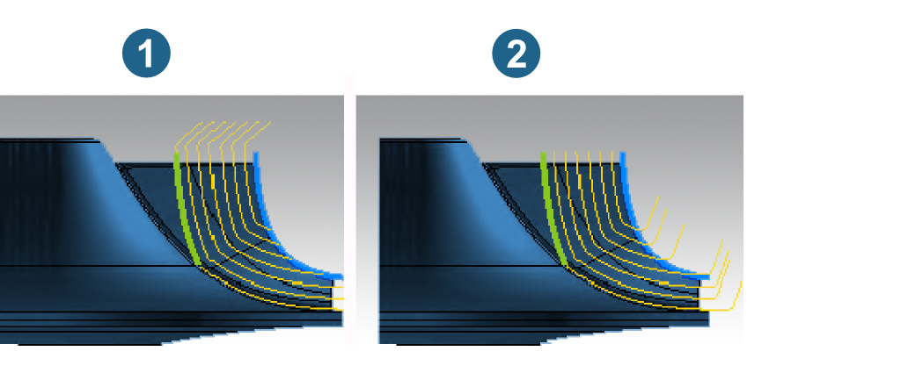
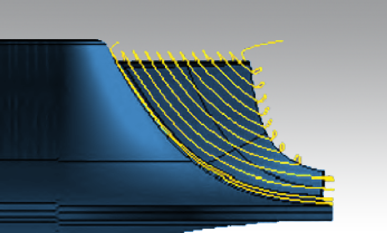
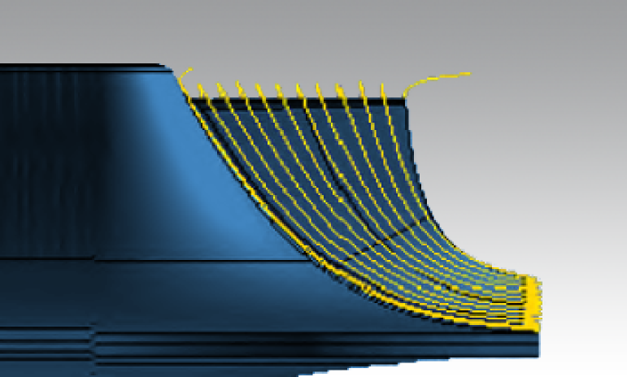

MB Point Milling
The cycle supports multiple processor cores and therefore shows a significant performance improvement for large calculations.
Strategy
The blade surfaces are machined in a continual, spiral-shaped and circumferential movement with tool point contact. Point milling should preferably be used if the blade surfaces are twisted double to such an extent that it is not possible to perform flank milling.
Milling reference
Main blade / Splitter blade: Specify the blade you want to machine. The selection of the splitter will not be available, if it has not been defined on the geometry model.
Pocket mode
Activate: As an alternative to the familiar continuous machining around the selected reference main blade, here the machining of the main blades takes place in the pocket, with the right-hand surface of the left blade and the left-hand surface of the right neighbour blade being machined in one operation.
The advantage of this machining strategy is that aids for reducing vibration can be introduced in the neighboring pockets.
 |
Entry position
Leading side / Trailing side: You can machine either on the leading (1) or trailing edge (2). When machining with the zigzag strategy, you should preferably start at the upper edge. With a constant machining direction, the entry position is generally dependent on the best possible lead angle.
|  |
Infeed strategy
Parallel to hub: The profile of the toolpaths is based on the hub. Constant path distance.
Compared to flow-strategy machining, the machining time is generally shorter given the same maximum infeed.
|  |
Flow: The profile of the toolpaths on the blades follows the direction of the flow. The path distance on the blades changes continually where the edges are of a different length.
Compared to partial cutting, it takes longer to machine with the same maximum infeed. As the milling grooves follow the direction of the flow, a greater scallop height and therefore a greater path distance may be permissible.
|  |